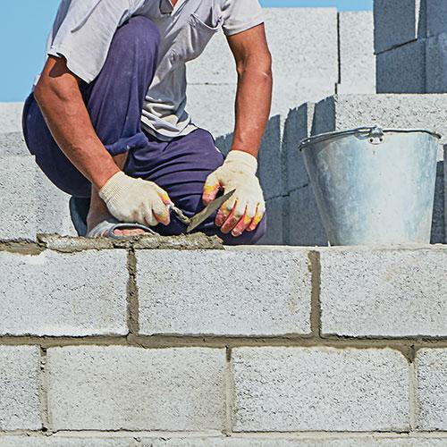
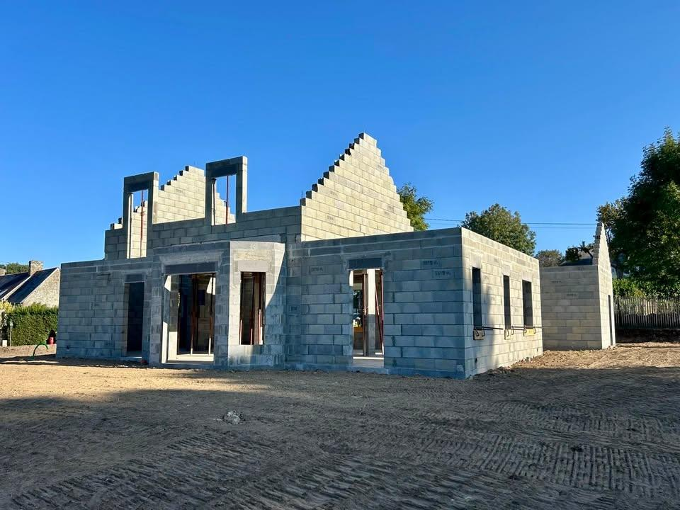
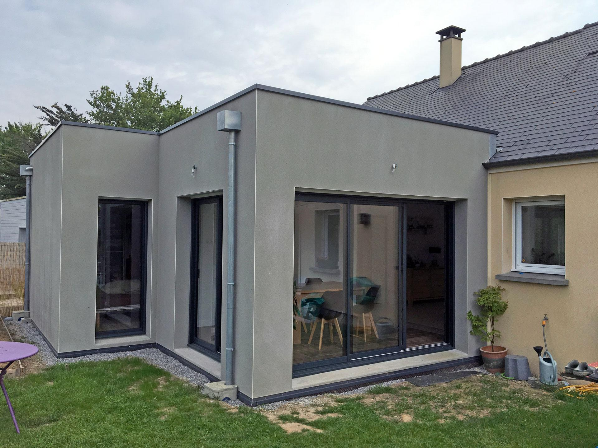
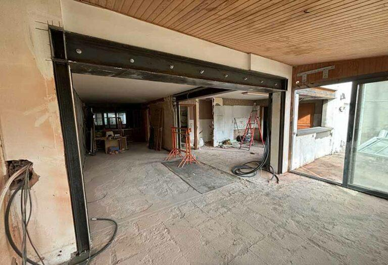
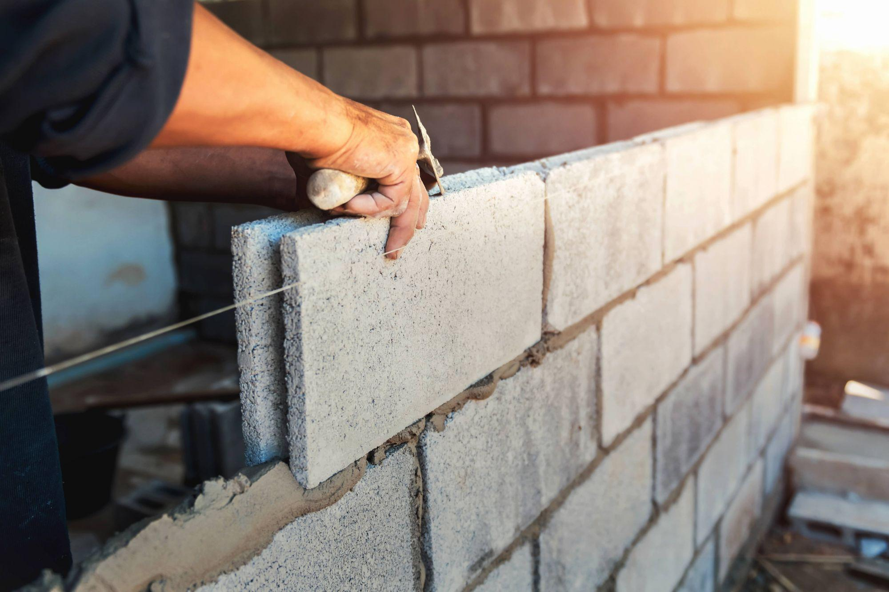
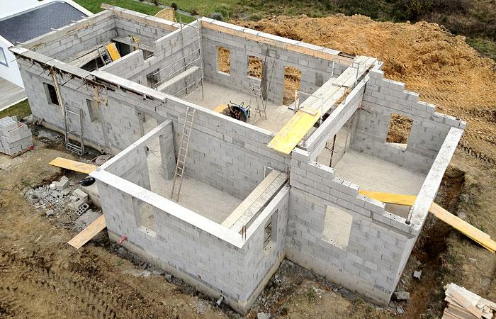
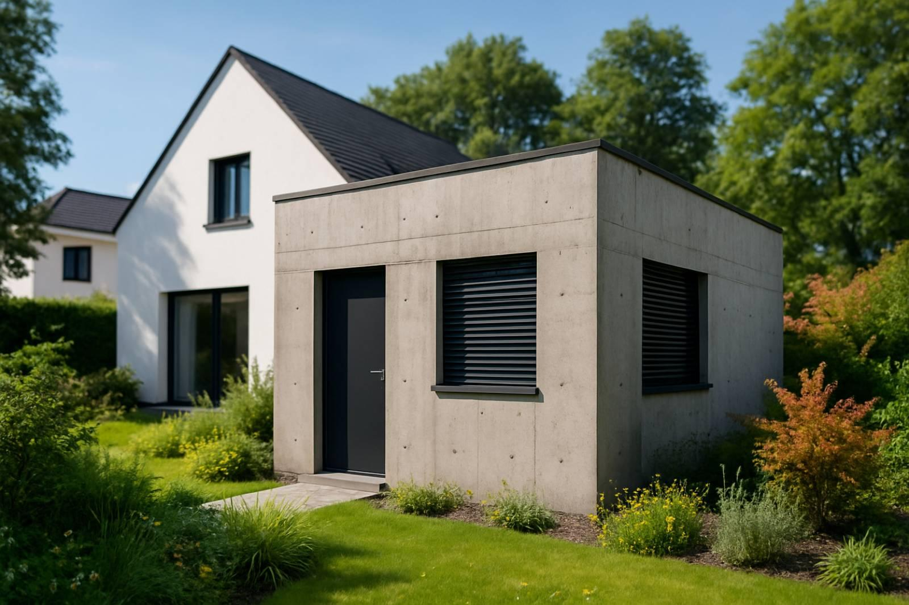

VG Maçonnerie intervient sur tous types de travaux : construction, rénovation et aménagement extérieur.

Construction de murs, fondations, dalles béton, clôtures et ouvrages de maçonnerie traditionnelle.
Devis gratuit
Réalisation des structures porteuses garantissant la solidité et la durabilité du bâtiment.
Devis gratuit
Agrandissement de votre habitation dans le respect de l’existant et des normes techniques.
Devis gratuit
Étude technique et réalisation d’ouvertures sécurisées avec pose de renforts adaptés.
Devis gratuit


Vous avez un projet de construction, rénovation, clôture, terrassement ou maçonnerie ?
Déposez votre dossier pour étude.